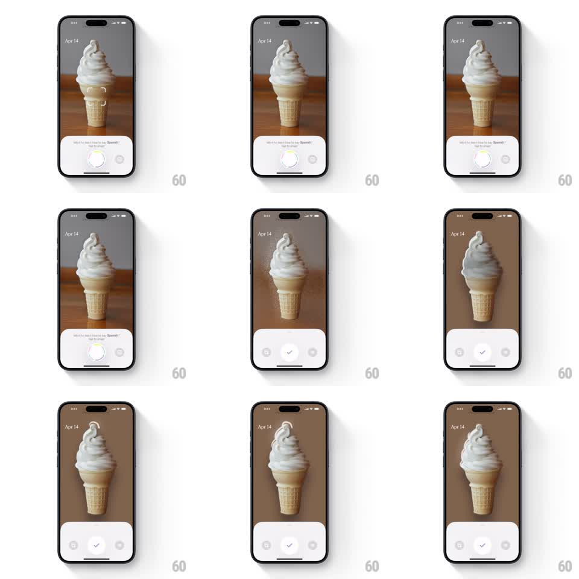

Media
Frame-by-frame

Rebuild this interaction 1:1: CapWords' snap masking - the camera view (an ice cream cone) shows a "Want to learn how to say 'Spanish'?" capture sheet, and on capture a sparkling particle sweep rises from bottom to top, masking the background away until the object stands cut out on a clean backdrop, with a confirm checkmark below.

Rebuild this interaction 1:1: CapWords' snap masking - the camera view (an ice cream cone) shows a "Want to learn how to say 'Spanish'?" capture sheet, and on capture a sparkling particle sweep rises from bottom to top, masking the background away until the object stands cut out on a clean backdrop, with a confirm checkmark below. ## Integration Integration: stack-agnostic spec - springs given as stiffness/damping, timed motions as duration + curve; map every value to your framework and animation library of choice. ## Scene Full-screen camera view dated "Apr 14": a soft-serve ice cream cone centered. Bottom sheet: capture prompt text, a shutter button, and a gallery thumbnail. Masking state: a sparkle wave sweeps upward, the wooden-table background dims and desaturates, and the cone emerges cleanly cut out on a flat warm backdrop; the sheet swaps to retake / confirm (checkmark) buttons. ## Motion spec Pattern: upward sparkle sweep with AI-style background masking. - Tap shutter: the shutter ring flashes (white overlay 120ms) and the photo freezes. - A band of sparkling particles (small stars and dots, 20-30) sweeps from the bottom edge to the top over 900ms (ease-in-out), leaving a trailing glow. - Behind the sweep, the background transitions: desaturates, darkens slightly, then crossfades to the flat backdrop color as the wave passes each region. - The object gains a crisp cutout edge with a subtle white outline glow once the sweep clears it (200ms). - The capture sheet collapses and the retake / confirm buttons fade up (250ms, 80ms stagger); the checkmark button does a small pop (scale 0.9 -> 1, spring ~300/18). ## Calibration - The sweep speed is constant - masking reads as a scan, not a wipe. - Sparkles lead the mask edge by ~20pt so the effect anticipates the cut. ## Reduced motion Photo crossfades to the masked version over 300ms with no particle sweep. ## Don't miss - The mask is object-accurate - the cone's swirl silhouette matters, not a rectangle. - The final backdrop is a warm flat tone sampled from the scene, not pure white.